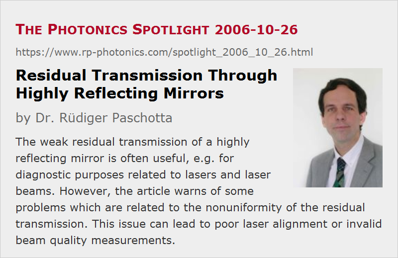

Residual Transmission Through Highly Reflecting Mirrors
Posted on 2006-10-26 as a part of the Photonics Spotlight (available as e-mail newsletter!)
Permanent link: https://www.rp-photonics.com/spotlight_2006_10_26.html
Author: Dr. Rüdiger Paschotta, RP Photonics Consulting GmbH
Abstract: The weak residual transmission of a highly reflecting mirror is often useful, e.g. for diagnostic purposes related to lasers and laser beams. However, the article warns of some problems which are related to the nonuniformity of the residual transmission. This issue can lead to poor laser alignment or invalid beam quality measurements.

Ref.: encyclopedia articles on laser mirrors and dielectric mirrors
Laser resonators are built with laser mirrors, which are nearly always dielectric mirrors. Most of those are made to be highly reflecting, with the reflection loss typically being of the order of 0.1%. This loss has basically three different origins: scattering, absorption, and some residual transmission.
The transmitted light is actually often useful, e.g. for diagnostic purposes. One can use it e.g. to monitor the intracavity power in a cavity-dumped laser or a regenerative amplifier; the small transmitted power is easily strong enough to obtain a good signal on a photodiode. Outside laser resonators, highly reflecting mirrors are sometimes used as attenuators in diagnostic setups.
However, some of these uses are problematic, because the residual transmission can be strongly dependent on the position on the mirror. Therefore, if one uses the signal from such a photodiode for optimizing the laser alignment, one may in the end optimize for a point with maximum residual transmission of the mirror, rather than a point with really optimum laser performance. And the beam quality of such a transmitted beam may be poor, even if the beam quality of the actual laser output beam is excellent. One realizes that highly reflecting mirrors are not the ideal attenuators. Using e.g. two output coupler mirrors with larger transmission in a series may be a much better solution, because that larger transmission is much more uniform. Of course, there are other options, such as using weak reflections from optical surfaces, but take care: using the weak reflection of p-polarized light near Brewster's angle is often not a good idea for strong attenuation, since any s-polarized component, as can be associated with depolarization loss in a laser, will then experience a much higher reflectivity, so that it can totally dominate the reflected light.
This article is a posting of the Photonics Spotlight, authored by Dr. Rüdiger Paschotta. You may link to this page and cite it, because its location is permanent. See also the RP Photonics Encyclopedia.
Note that you can also receive the articles in the form of a newsletter or with an RSS feed.
Questions and Comments from Users
Here you can submit questions and comments. As far as they get accepted by the author, they will appear above this paragraph together with the author’s answer. The author will decide on acceptance based on certain criteria. Essentially, the issue must be of sufficiently broad interest.
Please do not enter personal data here; we would otherwise delete it soon. (See also our privacy declaration.) If you wish to receive personal feedback or consultancy from the author, please contact him e.g. via e-mail.
By submitting the information, you give your consent to the potential publication of your inputs on our website according to our rules. (If you later retract your consent, we will delete those inputs.) As your inputs are first reviewed by the author, they may be published with some delay.
|  |
If you like this page, please share the link with your friends and colleagues, e.g. via social media:
These sharing buttons are implemented in a privacy-friendly way!